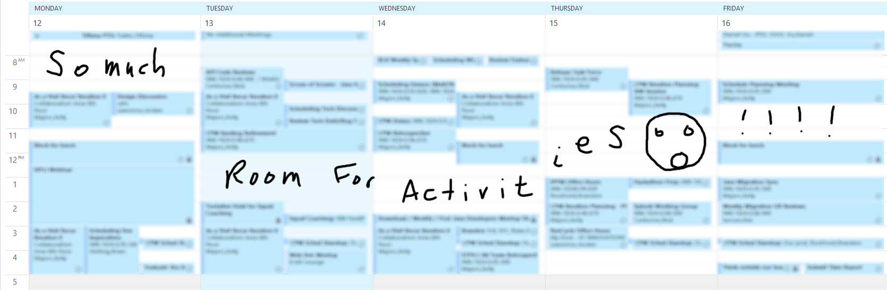

Cultivating Leadership Skills
Pragmatic Advice for Software Engineers
(Brandon Rockhold / Lead Architect / @BrandonRockhold)
About me...
You may remember me from such DevCon presentations as...
- What's that smell??? It's your code bro, it needs cleaned
- Yo dawg, I herd you like platforms, so I put a platform in your platform
- Crafting a Legacy Devoid of Legacy Code
- The Evolution of the Devil's Snare
Overview
- How to yell effectively
- Getting others to do your bidding against their will
- Fostering "healthy" levels of fear
- Accomplishing your goals at the expense of others' health and happiness
Overview
- How to yell effectively
- Getting others to do your bidding against their will
- Fostering "healthy" levels of fear
- Accomplishing your goals at the expense of others' health and happiness
- lol...j/k, bro; don't fire me
Overview... Srsly
- Overcoming the challenges of transitioning from individual to team
contributor
- Building a healthy team culture (as an informal or formal leader)
- Growing the skills of others
- Growing your own leadership skills
"To know and not to do is not to know."
- Dr. Steven R. Covey
New Challenges....
- Fragmented schedules
- Too much to do, too little time
- Increased need for effective communication and collaboration
- Reliance on team members for success
- Increased visibility and authority
Disclaimer
- I can't solve all your problems (or all of mine, unfortunately)
- I continue to learn and improve daily
- These things have helped me, but your mileage may vary
Fragmented schedules

Fragmented scheduling challenges
-
Finding time for Deep work
- Requires uninterrupted focus (or else)
- Typically the most important tasks we handle; can't delegate
- Cannot be easily done in short bursts
- Read Deep Work by Cal Newport to learn more
- Inefficiencies due to context switching
- Mental focus / Mind conditioned to be easily distracted
Maintain calendar control
- Avoid unnecessary meetings
- Be smart/cautious regarding recurring series
- Batch meetings to limit fragmentation
- Reserve blocks of time to focus
- Give yourself time to recharge; protect your lunch
Too much to do, too little time
TODO Find something funny for this transition...
Working deliberately vs reactively
Achieving balance in responsibilities
Increased need for effective communication and collaboration
TODO Find something funny for this transition...
Important concepts
- Leadership != Management
- Influence as a leader != Manipulation through authority
- Leadership is about vision and the willingness of others to follow
Reliance on team members for success
TODO Find something funny for this transition...
Increased visibility and authority
TODO Find something funny for this transition...
TODO: Add feedback slide here...